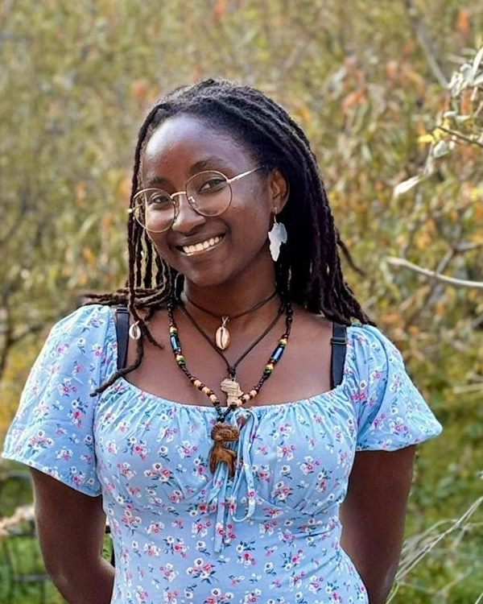
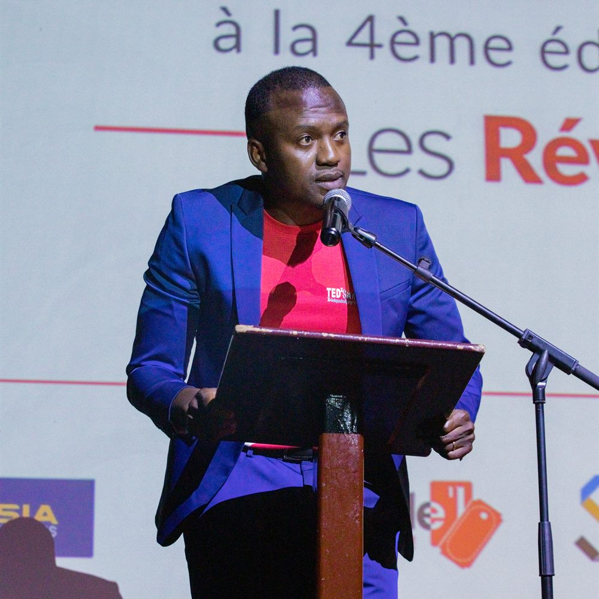
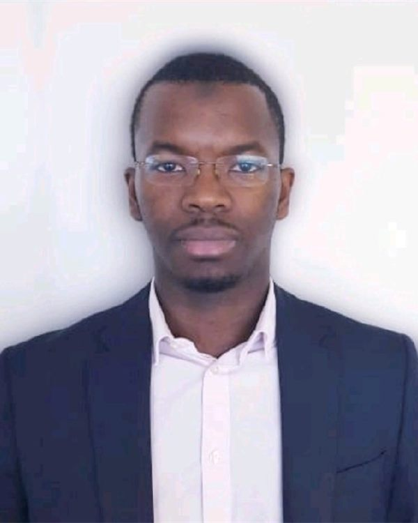
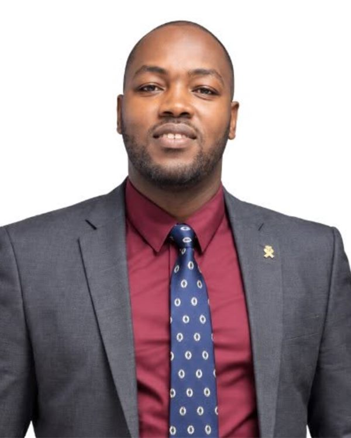
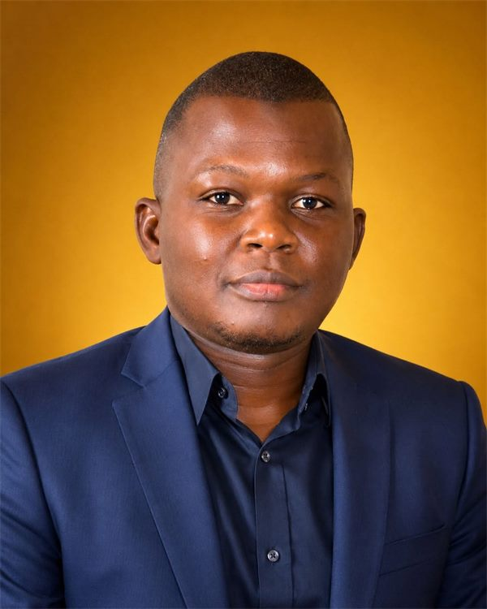

Mariam Diallo
Responsable communication

Avec l'ambition de diffuser des idées qui changent le monde, TED a créé un programme appelé TEDx. TEDx est un ensemble d'événements locaux, organisés de façon indépendante, qui rassemblent des personnes pour partager une expérience de type TED.
Notre événement s'appelle TEDxSandervalia, où « x » signifie « événement TED organisé de façon indépendante ». Les talks et les intervenants présents sur notre scène suscitent des discussions approfondies et des rencontres au sein d'un public restreint. TED fournit une orientation générale au programme TEDx, mais chaque événement TEDx, y compris le nôtre, est organisé de façon indépendante.
En savoir plus sur le programme TEDx
Né en 2022 à Conakry, TEDxSandervalia est le fruit de l'engagement de jeunes Guinéens, de celles et ceux qui vivent en Guinée comme de celles et ceux qui vivent à l'étranger. Malgré les distances, les contraintes et des réalités différentes, ils partagent une même conviction : le pays mérite qu'on lui consacre ses idées, son énergie et son temps.
Chaque édition réunit une centaine de personnes, conformément aux exigences de la licence TED, autour de talks de 18 minutes maximum. Ces talks sont filmés puis publiés sur la chaîne YouTube TEDx Talks. Les speakers sont accompagnés dans la préparation de leur intervention.
Nous ne sommes pas réunis pour écouter des personnes qui ont toutes les réponses, mais des personnes qui ont eu le courage de poser de nouvelles questions.
Loucény Condé est ingénieur, avec une double expertise en géophysique et en informatique. Après un début de carrière dans le secteur de l'énergie, notamment chez TotalEnergies, il conduit aujourd'hui des projets de transformation numérique au Laboratoire national de métrologie et d'essais (LNE), en France.
Attaché à la Guinée et désireux de valoriser les talents et les idées qui y émergent, il est à l'initiative de TEDxSandervalia : un cadre où des femmes et des hommes aux parcours différents partagent leurs expériences, questionnent les évidences et font émerger de nouvelles possibilités.

Autour du commissaire général, un comité de quatre membres prépare chaque édition.

Responsable communication

Responsable administratif et gestion des speakers

Responsable partenariats

Responsable organisation
Derrière chaque édition, un comité d'organisation et des dizaines de bénévoles qui travaillent souvent dans l'ombre : accueil, régie, communication, logistique, accompagnement des speakers.
Être bénévole à TEDxSandervalia, c'est aussi apprendre : chaque année, l'équipe bénéficie de formations, par exemple sur l'intelligence artificielle ou sur Canva.
Rejoindre l'équipe